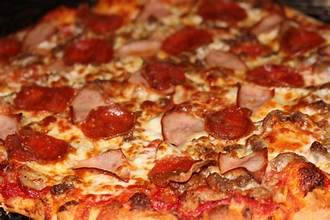

Meat Lover's Pizza

Description
This Meat Lover's Pizzas has a perfectly chewy crust,
tons of melty cheese, and is topped with plenty of juicy sausage crumbles, crispy bacon, and spicy pepperoni! YUM!
Ingredients
- 250 g all-purpose flour
- 7 g Instant Yeast
- 6 g granulated sugar
- ½ teaspoon fine sea salt
- 160 g water warm
- 15 g oil (olive oil or corn oil)
- cornmeal (optional), for bottom of pizza crust
- 130 g pizza sauce
- 198 g shredded mozzarella
- 70 g Italian sausage
- 2-3 slices cooked bacon finely chopped (or bacon bits)
- 30 g pepperoni
Directions
- In a large bowl, combine the flour, Instant Yeast, sugar, and salt. Add the water and oil,
and mix with a spatula until a shaggy dough forms and there are no dry parts.
The dough will be sticky; this is normal!
- Knead on a lightly floured surface until elastic, about 4 to 6 minutes.
Transfer the dough back to the mixing bowl, cover with plastic wrap, and let rest for 10 minutes.
- Preheat the oven to 500°F (260°C).
- Sprinkle the base of a pizza stone or baking sheet with a little cornmeal, if using.
Stretch out the dough into a 12-inch round and place on the pizza stone or baking sheet.
The center should be thinner than the edges.
If the dough is bouncing back and difficult to shape, let it rest for a few minutes then return to shaping.
- Evenly spread the pizza sauce on top, leaving about an inch of plain crust all the way around.
Top with the cheese, Italian sausage, bacon, and pepperoni.
- Sprinkle some Italian seasoning and red pepper flakes on top, if using, and transfer the pizza to the preheated oven.
Bake for 10-13 minutes, until the edges are golden brown and the cheese is melted and bubbling on top.
- Sprinkle chopped parsley and grated parmesan on top and allow the pizza to cool in the pan for 5 minutes,
then carefully remove the pizza to a cutting board.